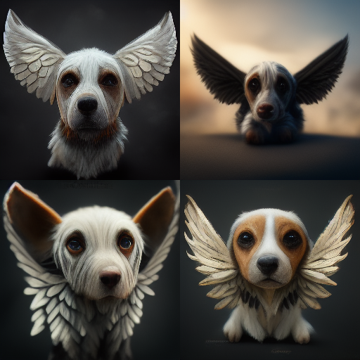
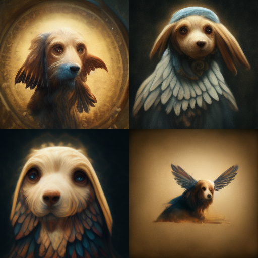

I.A - (In)discutível Arte
Apesar do título sugestivo, não vou entrar na clássica discussão sobre "o que é arte". Esse é um debate tão subjetivo que poderia nos levar a um labirinto sem saída. Meu objetivo aqui é mais simples: quero contar a história de dois camaradas.
Hotpot.AI
Meu primeiro contato com esse tipo de ferramenta foi com o simpático Hotpot. Ele oferece uma infinidade de aplicações, desde ideias textuais (como sugestões de roteiros, livros, nomes para produtos, personagens, ideias gerais...) até artes visuais (edição de fotos, desenhos estilizados, NFTs...). Cada ação solicitada consome uma quantidade de créditos proporcional à complexidade. Quase todas exigem créditos (ou seja, são pagas), mas há duas exceções gratuitas e interessantes. A primeira é o Art Maker, que, como o nome sugere, faz... macarrão com queijo!
Minto. Ele só cria arte a partir do que você digita:
"A dog with wings"
Eu sei o que você está pensando: "Nossa, que porcaria. Nada a ver." Mas, olha só, uma descrição meia boca vai te dar um resultado pé de chinelo. Então, é fundamental estruturar bem suas frases; caso contrário, sua interação com a ferramenta vai ser como tentar conversar com a velha surda. A segunda modalidade é o AI Sparkwriter (art idea), que promete ser a faísca criativa, gerando 5 frases sobre o assunto (desde que você use pelo menos 5 palavras).
Vamos ver como funciona...
"a dog with chicken wings"
Das 5 respostas que obtivemos, concentre-se na de número 2:
- With his giant wings, the dog eats the chicken and flies away.
- The dog is tired of people trying to pet him so he eats the chicken, gains wings and fly away.
- A close up of a chicken wing attached to a dog bone.
- A hound with a full chicken wing for his meal.
- The idea of eating chicken wings makes this dog too heavy, he jumps off his dining chair before it breaks.
Vamos ser honestos: a segunda opção tem seu valor.
Convenhamos que você não teria pensado nessas ideias, teria? Nem mesmo sob entorpecentes pesados! Ah, e vale mencionar que se você, por algum motivo, conseguir dar um nó na I.A, isto é, fazê-la pensar por mais de 2 horas sem gerar um resultado, o dono do site te dá 200 créditos para usar nos serviços pagos (Oi, Clarence!).
Fiz meu pé de meia! =D
Midjourney
Nessa minha segunda tentativa de transformar minhas ideias cataclísmicas e não ortodoxas em realidade, o Midjourney se destacou com resultados surpreendentemente satisfatórios. Pelo Discord, você pode bombardear a I.A. com requisições megalomaníacas. Mesmo que não saia exatamente como você imaginou, a arte final vai te agradar.
Vamos tentar de novo:
"A dog with wings"

Em 1 minuto, ele te entrega 4 sugestões, que você pode variar ou recomeçar sem mudar a instrução principal (prompt). Quando estiver satisfeito, é só pedir a versão em alta definição. Simples assim. No site oficial, você encontra todas as keywords para refinar os resultados, mas confesso que você aprende muito vendo a arte dos outros usuários.
Quer um exemplo?
"A dog with wings, da vinci"

Mas, claro, não existe almoço grátis: as primeiras 25 tentativas são gratuitas, depois disso, se tornam pagas (vale cada centavo). Não vou mostrar minhas super criações aqui porque são tão fantásticas que não quero que sejam usadas por terceiros.
Então, fica a dica: vai lá tentar a sorte!
E o Dall-E 2?
Infelizmente, por ser acessível apenas por convite, não tive a chance de bombardeá-lo com minhas frases mirabolantes. Mas a capacidade dele é de cair o queixo. Sendo assim, não posso opinar.
Artigo originalmente postado em 11 de Setembro de 2022 | LinkedIn